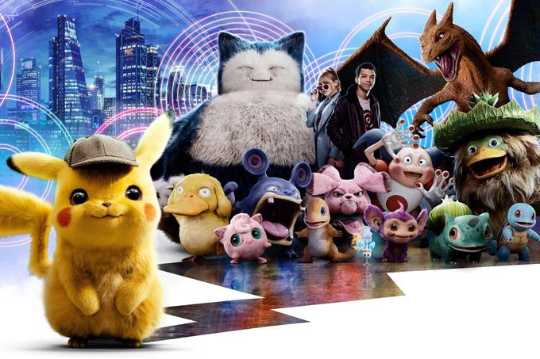

About Pikachu
Pikachu are one of the most well-known varieties of Pokémon, largely because Pikachu is a central character in the Pokémon anime series. Pikachu is regarded as a major character of the Pokémon franchise as well as its mascot, and has become an icon of Japanese pop culture in recent years. It is also seen as one of the major mascots for Nintendo.
Pikachu and his friends
Pikachu's Characteristics
- Pikachu is a small, chubby, and incredibly cute mouse-like Pokémon which is covered almost completely by yellow fur
- It has long yellow ears that are tipped with black
- Pikachu's back has two brown stripes, and its large tail is notable for being shaped like a lightning bolt
- On its cheeks are two circle-shaped red pouches used for storing electricity, they turn yellow and spark with electricity when its about to use an Electric attack such as Thunderbolt
- It can be seen with small surges of electric energy whenever a Pikachu gets protective, mad, etc. When several of these Pokemon gather, their electricity can cause lightening storms.
Interesting facts
- Pikachu is the only starter in the canon RPG games that deviates from the usual Grass-, Fire-, and Water-typings
- Pikachu is the only Pokémon to have appeared in every episode, special, and movie in the series in some shape or form.
- Pikachu is the Japanese mascot for the 2014 FIFA World Cup
- Pikachu and Meowth have inverse Pokedex numbers, 25 and 52. Coincidently, they are based off a cat and a mouse.
- More...